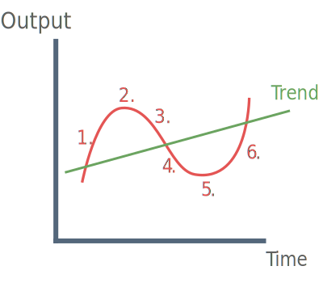

Phases of the Economic Cycle

1. Booms
Periods of strong output growth, above the trend rate. It is likely that inflation will accelerate, as the growth of AD outstrips that of AS.
2. Peaks
These are the points at which output is higher or lower than in the surrounding years.
3. Slowdowns
Occurs when the pace of output growth slows without actually falling.
4. Recession
A recession is defined as at least two successive quarters of falling GDP, associated with rising unemployment, reduced inflationary pressure and improvements in the balance of payments.
5. Troughs
These are the points at which output is lower than in the surrounding years.
6. Recovery
Rising output, falling unemployment, increasing inflationary pressure and a deterioration of the balance of payments.
Explanations of the Economic Cycle
1) Speculative ‘bubbles’
Rapid economic growth = rapid rise in speculative ‘bubble’. Traders acquire assets and sell them in an attempt to make profit. Traders eventually realise that the prices of assets have risen considerably above their real value and everyone sells. The bubble bursts destroying confidence and may cause recession.
2) Changes in inventories
Firms invest in stock of raw materials and finished goods to ensure that there are no interruptions in production.This is termed inventory investment or stock building. Stocks of unsold finished goods build up when firms are too optimistic about demand for their products.
Firms are then forced to cut production by more than the fall in demand. Destocking effect can turn a slowdown into recession.
3) Political cycles
Political parties may attempt to engineer a boom in economic activity in the run up to an election to secure votes. Once the election is over, the ruling party may then deflate AD to avoid demand-pull inflation.
4) Outside ‘shocks’ (Demand-side shocks / Supply-side shocks)
In some cases, outside shocks may be both demand and supply-side e.g. Hurricane activity in the Gulf of Mexico reduces demand from the U.S and also affects the supply of crude oil.
This raises the price and costs = fall in demand. A large fall in exports for strategic goods such as oil may hugely reduce aggregate demand in some economies.
5) Multiplier / Accelerator model
If national income is growing, then investment will increase. Increase in investment will lead to an increase in national income via positive multiplier effect. If national income falls multiplier / accelerator will work in the opposite direction.
6) Marxist Theory
Marxist economists explain economic cycles as a restructuring process. Maxists believe that recessions create conditions in which stronger firms take over weaker competitors or face bankruptcy. Marxists view business cycles as necessary for the regeneration and survival of capitalism.